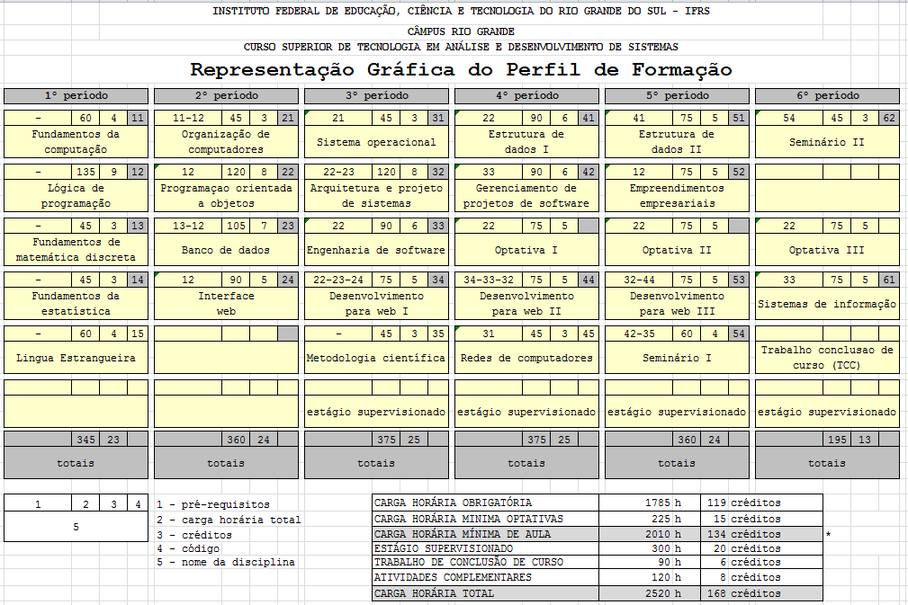

<DOCTYPE html>
<html lang="en">
   <head>
      <script type="text/javascript" src="jquery-1.12.3.min.js"></script>
      <script type="text/javascript" src="index.js"></script>
      <link rel="stylesheet" href="index.css"/>
      <link href="bootstrap-3.3.6-dist/css/bootstrap.min.css" rel="stylesheet">
      <link href="bootstrap-3.3.6-dist/css" type="text/html">
      <link rel="shortcut icon" href="favicon.ico">
      <meta charset="utf-8">
      <meta name="description" content="Tecnólogo em Análise e Desenvolvimento de Sistemas - IFRS Rio Grande">
      <meta name="keywords" content="TADS,tecnologo,programacao,web,ifrs,rio grande,superior">
      <title>TADS - Tecnólogo em Análise e Desenvolvimento de Sistemas</title>
      <!-- Bootstrap core CSS -->
      <link href="bootstrap-3.3.6-dist/css/bootstrap.min.css" rel="stylesheet">
      <!-- IE10 viewport hack for Surface/desktop Windows 8 bug -->
      <link href="bootstrap-3.3.6-dist/css/ie10-viewport-bug-workaround.css" rel="stylesheet">
      <!-- Just for debugging purposes. Don't actually copy these 2 lines! -->
      <!--[if lt IE 9]><script src="../../assets/js/ie8-responsive-file-warning.js"></script><![endif]-->
      <script src="bootstrap-3.3.6-dist/js/ie-emulation-modes-warning.js"></script>
      <!-- HTML5 shim and Respond.js for IE8 support of HTML5 elements and media queries -->
      <!--[if lt IE 9]>
      <script src="https://oss.maxcdn.com/html5shiv/3.7.3/html5shiv.min.js"></script>
      <script src="https://oss.maxcdn.com/respond/1.4.2/respond.min.js"></script>
      <![endif]-->
      <!-- Custom styles for this template -->
   </head>
   <!-- NAVBAR
      ================================================== -->
   <body background="now.jpg" >
      <div class="navbar-wrapper">
         <div class="container">
            <nav class="navbar navbar-inverse navbar-static-top">
               <div class="container">
                  <div class="navbar-header">
                     <button type="button" class="navbar-toggle collapsed" data-toggle="collapse" data-target="#navbar" aria-expanded="false" aria-controls="navbar">
                     <span class="sr-only">Toggle navigation</span>
                     <span class="icon-bar"></span>
                     <span class="icon-bar"></span>
                     <span class="icon-bar"></span>
                     </button>
                     <a class="navbar-brand" href="index.html">TADS</a>
                  </div>
                  <div id="navbar" class="navbar-collapse collapse">
                     <ul class="nav navbar-nav">
                        <li><a href="curriculo.html">Perfil de formação</a></li>
                        <li><a href="professores.html">Professores</a></li>
                        <li><a href="tcc.html">Trabalhos de Conclusão de Curso</a></li>
                     </ul>
                  </div>
               </div>
            </nav>
            <div class="container" src="curriculo.png">
               
            </div>
         </div>
         <!-- FOOTER -->
         <footer>
            <p class="pull-right"><a href="#">Back to top</a></p>
            <p>&copy; 2016 Company, Inc. &middot; <a href="#">Privacy</a> &middot; <a href="#">Terms</a></p>
         </footer>
      </div>
      <!-- /.container -->
      <!-- Bootstrap core JavaScript
         ================================================== -->
      <!-- Placed at the end of the document so the pages load faster -->
      <script src="https://ajax.googleapis.com/ajax/libs/jquery/1.12.4/jquery.min.js"></script>
      <script>window.jQuery || document.write('<script src="../../assets/js/vendor/jquery.min.js"><\/script>')</script>
      <script src="bootstrap-3.3.6-dist/js/bootstrap.min.js"></script>
   </body>
</html>